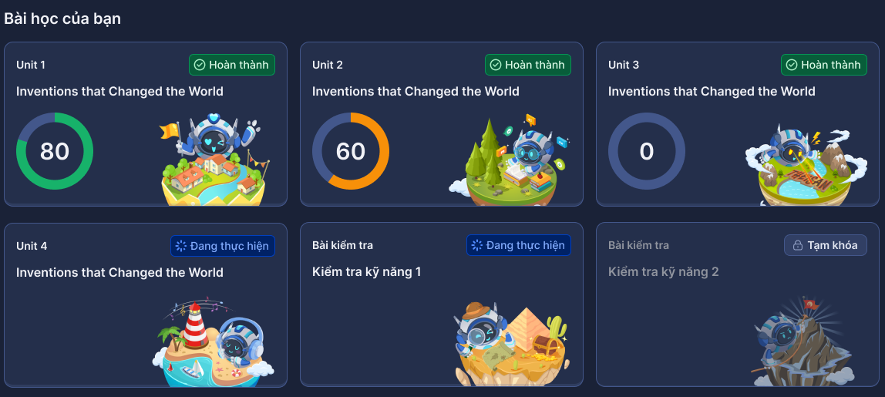
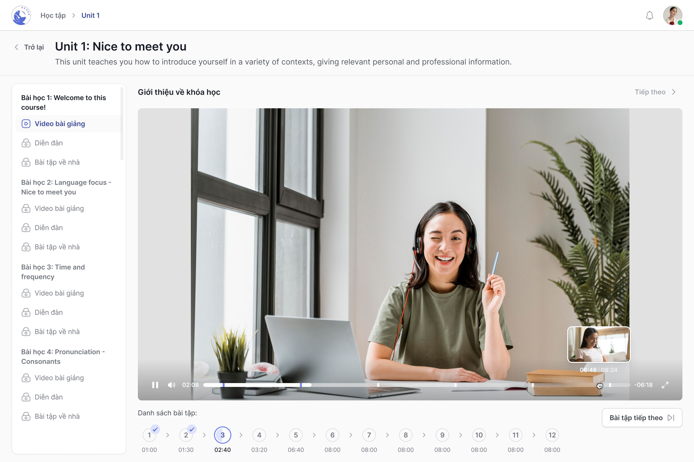
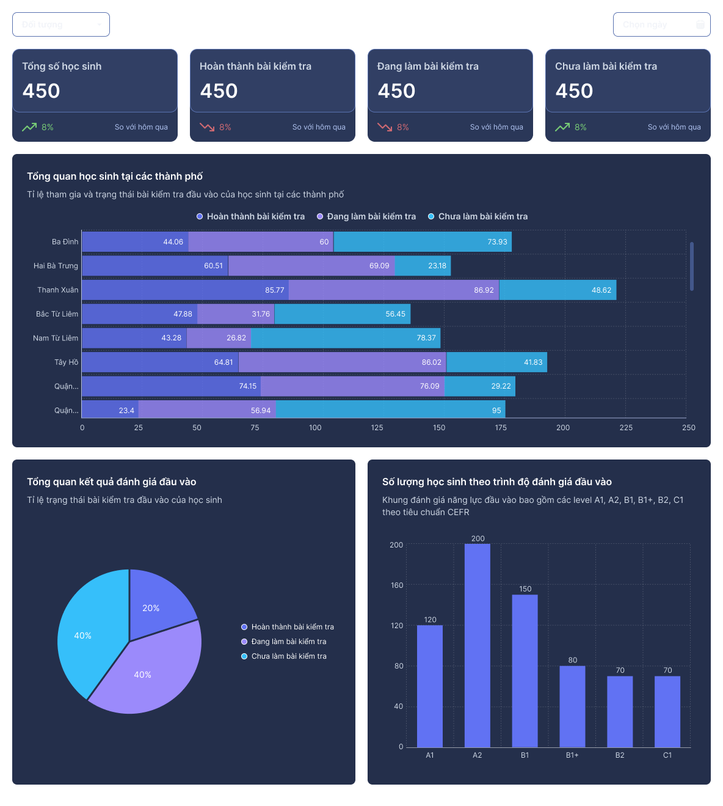

Dành cho sinh viên
Tiếp cận chương trình học, theo dõi bài học và thực hành qua các hoạt động trong khóa học.

Kết nối chương trình học, lớp học và tiến độ học tập trong trải nghiệm dành cho nhà trường.
Trao đổi về triển khai ↓
Từ học tập của sinh viên đến tổ chức lớp và theo dõi tiến độ.
Tiếp cận chương trình học, theo dõi bài học và thực hành qua các hoạt động trong khóa học.

Đồng hành cùng lớp học và theo dõi tiến độ học tập của sinh viên.
Quản lý lớp và quan sát tiến độ để hỗ trợ hoạt động đào tạo của nhà trường.

Dữ liệu minh họa trong giao diện.
Chia sẻ nhu cầu của nhà trường để bắt đầu trao đổi về triển khai.
0903 470 020